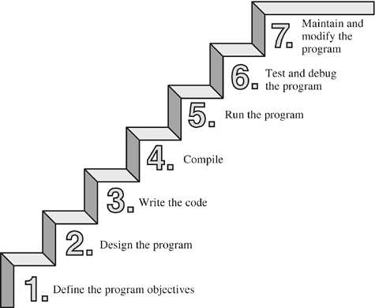

INTRODUCTION
Algorithms, Data structure, Program
ALGORITHMS
Finite set of instructions executed in step by step method meant to perform a specific task.
DATA STRUCTURE
Organization or arrangement of data in computer's memory to utilize the data in an effective manner.
PROGRAMS
Implementation of algorithms using a programming language in an effective and efficient manner.
ALGORITHMS

Algorithm Design
- Input
- Output
- Definiteness
- Finiteness
- Effectiveness
Algorithm Analysis
- Space complexity
- Time complexity
Implement & Experiment
- Decide on the programming language to use like C, C++, Lisp, Java, Perl, Prolog, assembly, etc. , etc.
- Test it properly for different scenarios.
- Experiment the algorithm against time complexity and space complexity.
Data Structures
Classifications
- Linear
- Non Linear
- Dynamic
- Static
- Homogenous
- Non Homogenous
Examples
- Arrays
- Stacks
- Queues
- Linked Lists
- Trees
- Graphs
- Tables
- Sets
Programming
“Measuring programming progress by lines of code is like measuring aircraft building progress by weight.” -- Bill Gates
Sample Program
int main( )
{
int num1, num2, sum;
printf("Enter two integers: ");
scanf("%d %d",&num1,&num2);
/* Stores the two integer entered by user in variable num1 and num2 */
sum=num1+num2; /* Performs addition and stores it in variable sum */
printf("Sum: %d",sum); /* Displays sum */
return 0;
}
Steps to write a good program
Programming Trends
- Increased efficiency
- Increased customization
- User friendly
- Analyze the problem clearly
- Think twice about how to solve that problem
- Gather complete requirements.
- Write a thorough implementation plan
- Comment your code liberally
- Use consistent naming conventions for variables
- Organize your code
- Test everything
- Practice, practice, practice
- Be prepared for change